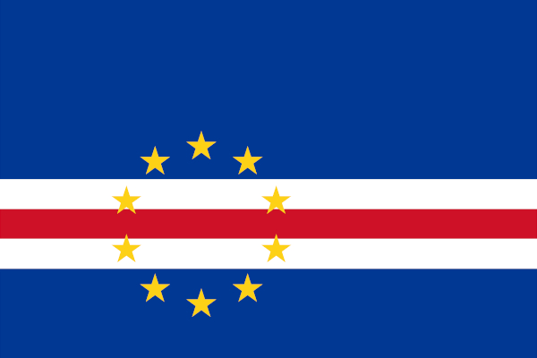

Dados
- Área:
- 4.033 km²
- População:
- 527.326 habitantes
- Capital:
- Praia
- Idiomas:
- Português e crioulo cabo-verdiano
- Moeda:
- Escudo cabo-verdiano
- Fuso horário:
- UTC−1
- Código telefônico:
- +238
- Domínio de internet:
- .cv
Clima
- Temperatura:
- 24 °C
- Condições:
- Parcialmente nublado
- Vento:
- 18 km/h
- Sensação térmica:
- N/A